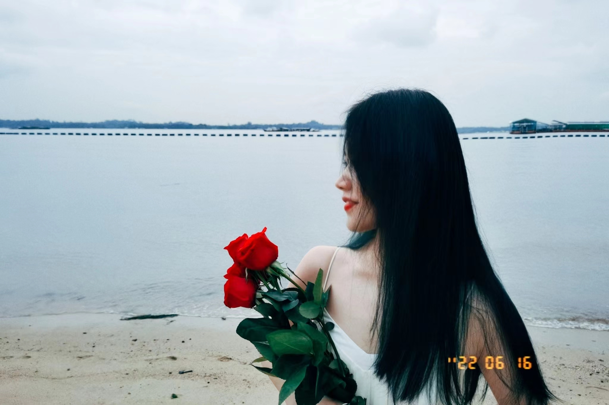
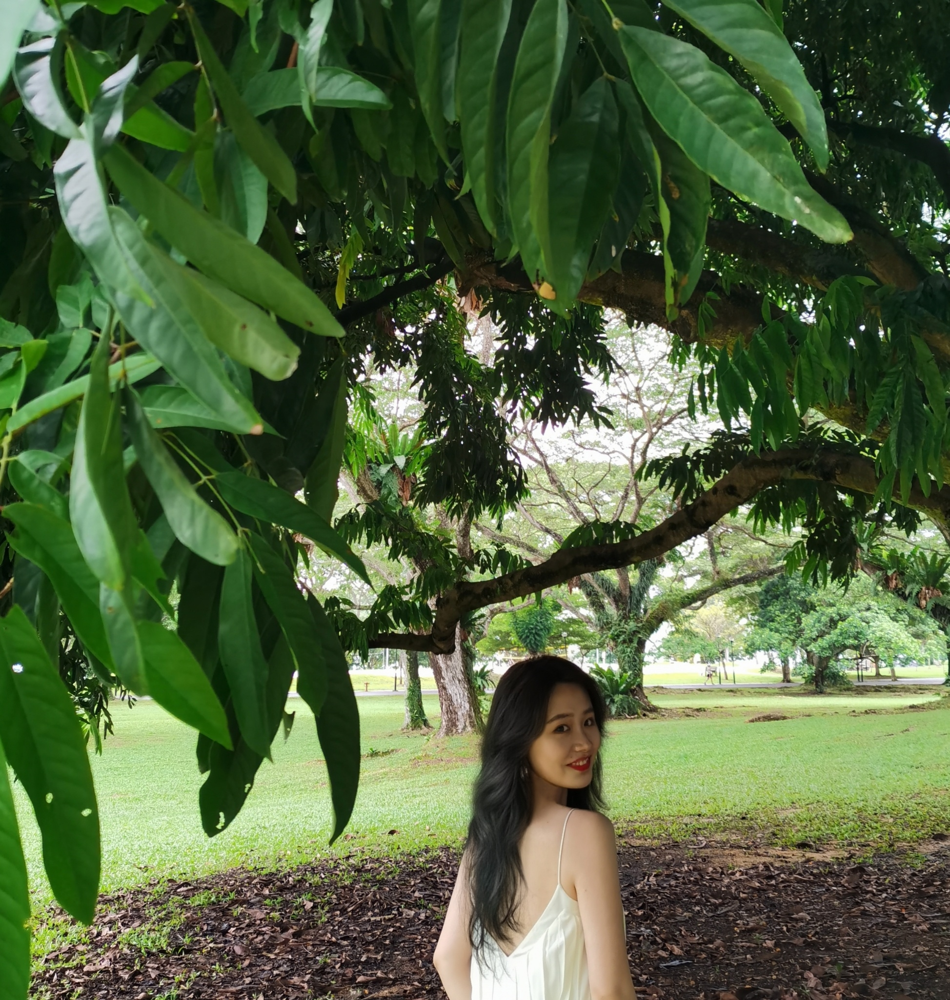

A long long story
我们的故事开始于1月18日。
那晚，你拖着重重的箱子从出租车走出，第一次来到我的面前问路。
当时的你，恰如一个小小的高中生，怯生生的让人忍不住帮你。
第一次帮你搬箱子到寝室后，我们加了微信，于是也有了第一次的对话。

我们是1月19日第一次正式见面去了趟超市，我们起初在utown找了很久才找到彼此，
而那天晚上我和你聊得很开心。
我第一次见到这么活泼的女生，确切的说，你似乎打开了我沉寂了很久的心。
那次之后，我们开始了约饭约自习，我们一起见过utown楼顶的繁星，也一起见过宿舍楼的夜灯...
 |
 |
 |
|
时间过得很快，很快迎来了新年。
我们俩在新年那天晚上跑到了西海岸，除夕夜虽远在异乡，但因为有你的陪伴竟也不那么孤单。
我也终于在那天晚上，给你讲了我自己最大的秘密。

很开心的是，你没有嫌弃我。我们在草地上吃冰棍，举着双手，好快乐
|
 |
国年后，我们开始了动物园之旅，从鸟类动物园，到夜间动物园。
因为有你，鸟类动物园不那么无聊，而夜间动物园也不那么惊悚。



|